Koordinat dan pengulangan
Peserta didik mempraktikkan pengaturan posisi serta gerakan sprite, kemudian menggunakan instruksi berulang untuk membentuk perilaku yang terstruktur.
Bagian ini berfokus pada praktik mengajar mandiri Siklus 1 di kelas IX.2. Rangkaian pembelajaran menghubungkan konsep pemrograman visual dengan perancangan proyek sederhana yang memberi ruang bagi pilihan dan kreativitas peserta didik.
Siklus 1 merupakan tahap peralihan dari pengenalan antarmuka dan blok dasar Scratch menuju penerapan konsep dalam proyek individual. Aktivitas disusun bertahap agar peserta didik dapat mengamati hubungan antara instruksi, perilaku objek, dan hasil program.
Peserta didik mempraktikkan pengaturan posisi serta gerakan sprite, kemudian menggunakan instruksi berulang untuk membentuk perilaku yang terstruktur.
Materi memperluas interaksi program melalui deteksi kondisi, penyimpanan nilai, dan pengolahan ekspresi sederhana.
Peserta didik mulai menentukan ide dan rancangan proyek Scratch. LKPD disesuaikan dengan kebutuhan dan kesiapan pengerjaan.
Konteks sebelum siklus. Pada praktik terbimbing P1–P2 (28 Juli dan 4 Agustus 2026), peserta didik diperkenalkan pada algoritma, antarmuka Scratch, blok gerakan dan kejadian, serta interaksi antarsprite. Refleksi awal mencatat perbedaan pengalaman menggunakan Scratch dan beberapa kendala akses akun. Umpan balik Guru Pamong menekankan pengondisian kelas, pengawasan penggunaan perangkat, dan pendampingan yang sesuai kebutuhan.
Modul ajar pada Siklus 1 memberi urutan belajar dari konsep dasar menuju penerapan. Dokumen lengkap dapat dibuka melalui tautan berikut.
Refleksi pelaksanaan, kendala, umpan balik, dan rencana perbaikan; dokumen bertanda tangan.
Buka refleksi ↗Urutan materi menghubungkan konsep pemrograman dengan hasil yang dapat diamati pada Stage. Peserta didik tidak hanya mengenali blok, tetapi juga menguji perubahan instruksi dan mengamati dampaknya.
Scratch menjadi lingkungan praktik utama, didukung demonstrasi dan LKPD. Petunjuk bertahap membantu peserta didik yang belum terbiasa, sementara peserta didik yang lebih siap dapat melanjutkan eksplorasi.
Perbedaan kesiapan teknis, akses akun, dan kecepatan memahami blok menuntut pengecekan perangkat lebih awal serta pengaturan waktu praktik yang lebih cermat.
Pada proyek individual P5, seorang peserta didik mengembangkan Nusantara Lost Archive, sebuah permainan investigasi yang mengajak pemain mengenali motif batik dari berbagai daerah di Indonesia. Gagasan proyek menggabungkan permainan, pengenalan warisan budaya, dan pemanfaatan kecerdasan buatan dalam pengalaman belajar interaktif.
Proyek dibuat menggunakan PictoBlox, lingkungan pemrograman visual berbasis Scratch 3.0 yang menyediakan ekstensi untuk AI dan machine learning. Peserta didik melatih model klasifikasi gambar dengan 15 kategori batik. Hasil identifikasi kemudian digunakan sebagai konteks untuk menyajikan informasi budaya, menyusun tantangan, dan melanjutkan alur permainan.
Pemain memilih arsip batik yang identitasnya perlu ditemukan kembali.
Model klasifikasi citra memprediksi kategori batik yang sedang ditampilkan.
Generative AI menyusun learning card berisi nama, asal, makna, ciri khas, dan fakta menarik tentang motif tersebut.
AI menghasilkan soal pilihan ganda berdasarkan arsip yang sedang dipelajari. Jawaban pemain diproses untuk menentukan hasil dan menampilkan umpan balik.
Arsip yang berhasil diselesaikan ditandai sebagai pulih. Pemain dapat melanjutkan ke arsip berikutnya hingga menuntaskan koleksi.
Peserta didik mengembangkan model pengenal 15 motif batik dan menghubungkan hasil prediksinya dengan variabel serta peristiwa pada proyek.
Pemanggilan AI digunakan untuk membuat materi pengayaan dan soal secara dinamis, sehingga konten permainan tidak seluruhnya ditulis sebagai teks tetap.
Sprite, backdrop, variabel, pesan broadcast, timer, daftar arsip, dan kondisi permainan dirangkai untuk mengatur perpindahan antartahap.


Karya ini memperluas tugas proyek bebas P5 dari pembuatan karya Scratch menjadi integrasi pemrograman visual, pelatihan model klasifikasi, generative AI, dan konten budaya Indonesia. Platform yang digunakan adalah PictoBlox, yaitu software berbasis Scratch 3.0 dengan dukungan ekstensi AI dan machine learning.
Scratch digunakan sebagai media untuk memvisualisasikan urutan instruksi dan menguji perilaku sprite. Demonstrasi guru memberi contoh awal sebelum peserta didik memodifikasi program secara langsung.
LKPD menjadi panduan praktik dan memberi tahapan kerja. Pada kegiatan proyek, bentuk pendampingan disesuaikan dengan kesiapan peserta didik dan kebutuhan proyek masing-masing.
Kegiatan nonmengajar memberi kesempatan untuk terlibat dalam rutinitas sekolah, membangun hubungan dengan peserta didik, dan mendukung lingkungan belajar yang tertib.
Selain praktik pembelajaran di kelas, saya terlibat dalam kegiatan sekolah pada peringatan 17 Agustus dan mendapat giliran piket yang mencakup penyambutan peserta didik, pendampingan kegiatan literasi, serta tugas di UKS.
Piket dilakukan di area kedatangan sekolah bersama petugas lain. Guru menyapa peserta didik yang tiba, memberi salam, dan membantu membangun suasana pagi yang ramah serta tertib sebelum kegiatan belajar dimulai.
Piket literasi memberi peran untuk mendampingi kegiatan bersama peserta didik dan menjaga ketertiban selama kegiatan berlangsung. Kehadiran guru membantu memastikan peserta didik dapat mengikuti rutinitas literasi sebagai bagian dari budaya belajar sekolah.
Saya juga mendapat giliran piket UKS sebagai bagian dari tugas nonmengajar dan turut mendukung kegiatan layanan kesehatan sekolah.
Dokumentasi memperlihatkan keterlibatan warga sekolah dalam aktivitas kelompok di halaman sekolah. Kegiatan di luar kelas ini menjadi bagian dari pengalaman berinteraksi dengan peserta didik dan lingkungan sekolah dalam suasana peringatan kemerdekaan.
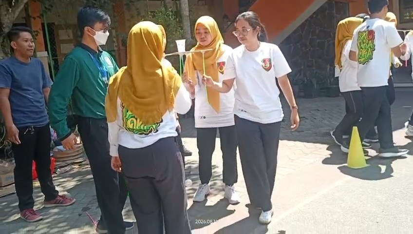
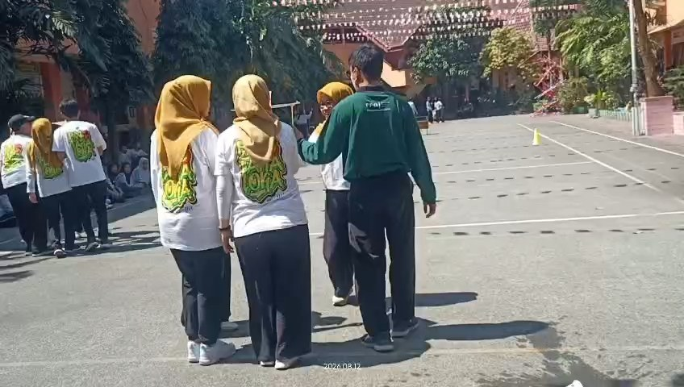
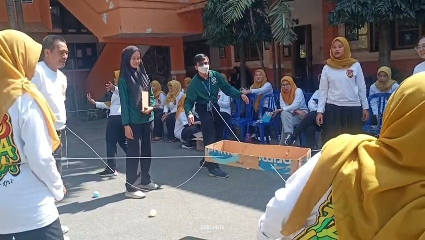
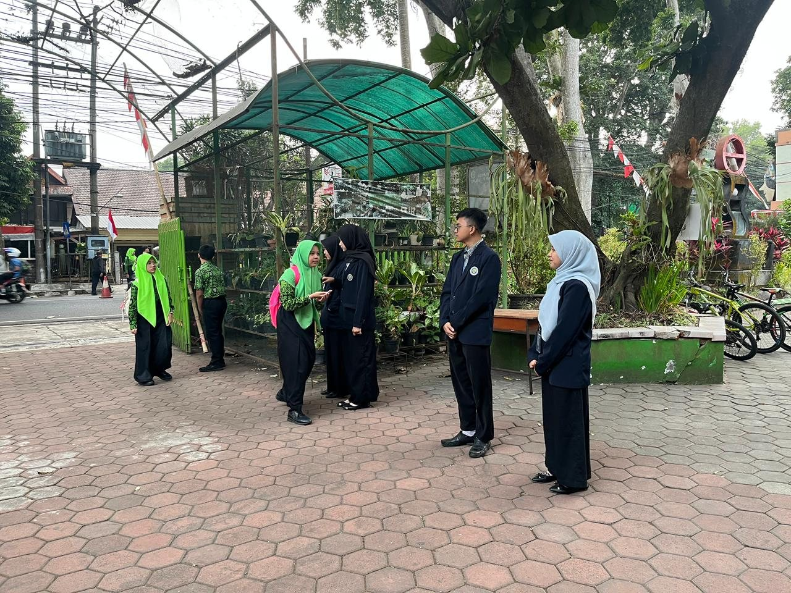
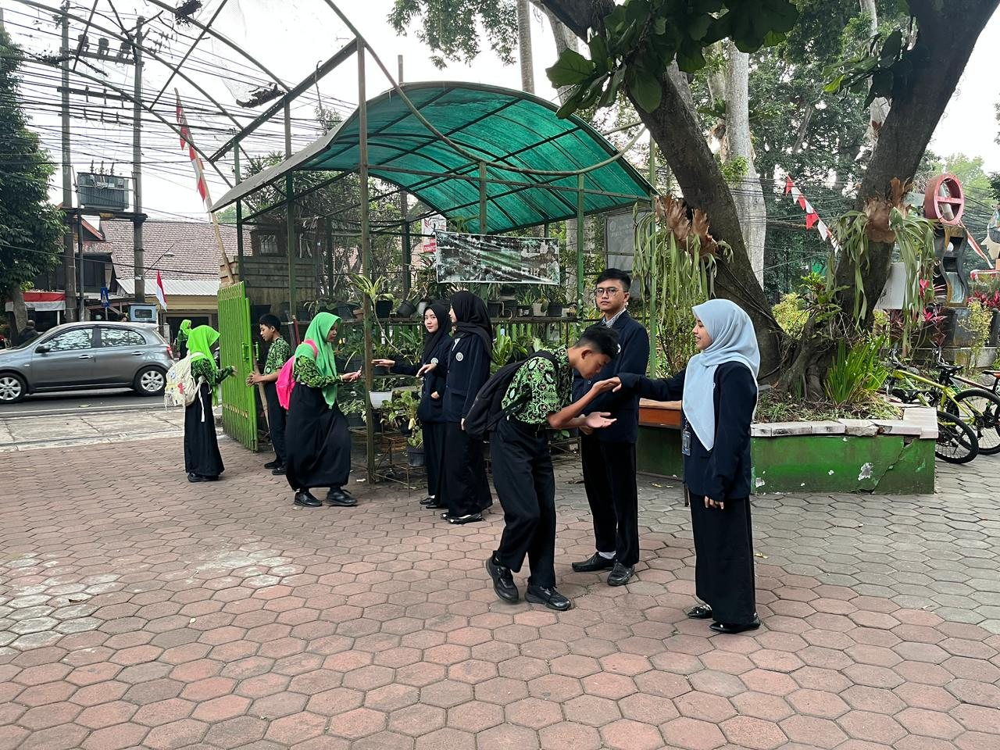
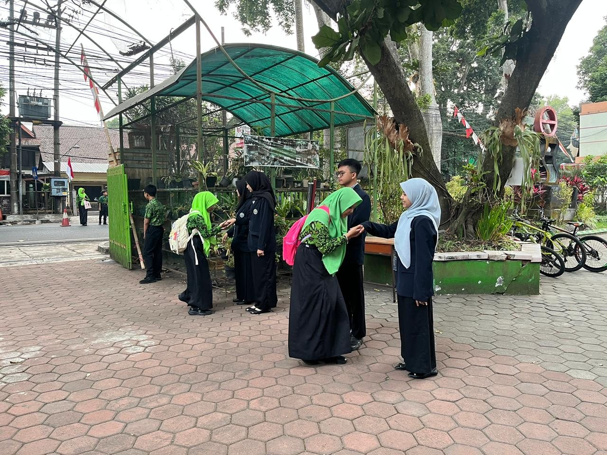
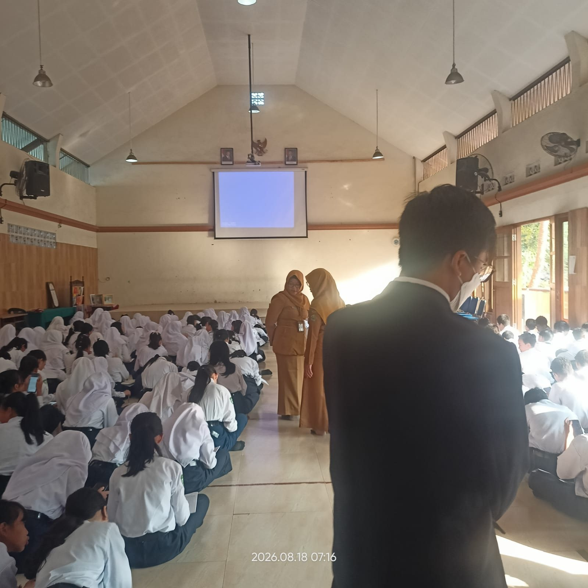
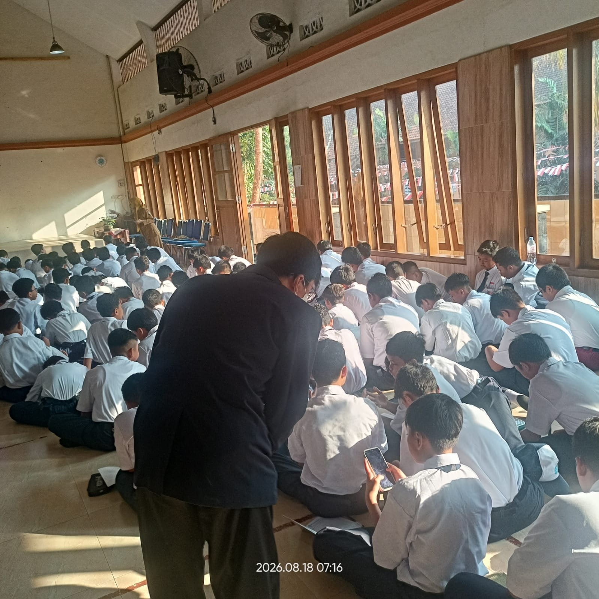
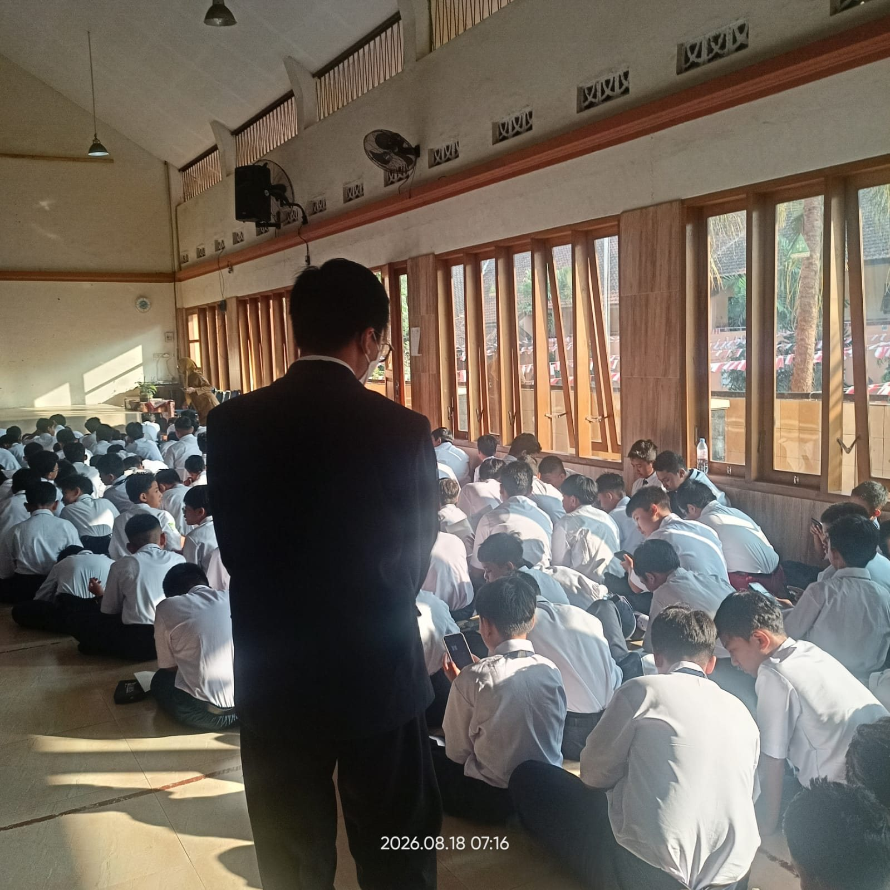
Asesmen formatif dilaksanakan melalui kuis akhir pertemuan dan pengamatan proses. Pada awal proyek, penilaian produk dirancang untuk melihat kemajuan sekaligus kualitas penerapan konsep pemrograman.
Rekaman Google Forms tersedia untuk P1–P4. Respons individu tidak ditampilkan pada situs untuk menjaga kerahasiaan identitas dan hasil belajar peserta didik.
Rubrik tertulis mencakup kemajuan terhadap rencana (20), pemecahan masalah/debugging (10), penggunaan blok Scratch (32), penerapan konsep pemrograman (18), fungsi dan kelengkapan (15), serta penjelasan/refleksi (5), dengan total 100 poin.
Aspek proses dan penjelasan penting karena kualitas proyek tidak hanya ditentukan oleh banyaknya fitur, tetapi juga oleh alasan pemilihan blok, kemampuan menguji, dan memperbaiki program.
Selain asesmen terhadap peserta didik, tersedia bukti penilaian profesional dari Guru Pamong. Kedua lampiran berikut sudah diisi dan memuat skor pada indikator penilaian.
Pemanfaatan hasil penilaian. Lampiran 7 memberi umpan balik terhadap kualitas perencanaan perangkat pembelajaran, sedangkan Lampiran 8 menilai pelaksanaan pembelajaran mandiri. Keduanya melengkapi refleksi LK4S1 dan dokumentasi pelaksanaan sebagai bahan evaluasi praktik.
Video berikut berisi cuplikan terpilih yang memperlihatkan proses pembelajaran pada setiap periode.
Rangkaian dimulai dengan pemetaan pengetahuan awal, dilanjutkan pengenalan konsep dan demonstrasi, kemudian pendampingan praktik serta refleksi pembelajaran.
Guru mengajukan pertanyaan lisan untuk mengetahui pengalaman dan pemahaman awal peserta didik tentang Scratch. Cuplikan ini menunjukkan penggunaan asesmen diagnostik sebelum materi dilanjutkan.
Respons positif diberikan kepada peserta didik yang berani menjawab. Penguatan ini membantu membangun suasana kelas yang mendukung partisipasi.
Guru menyampaikan materi sebagai landasan sebelum peserta didik mencoba lingkungan pemrograman visual secara langsung.
Seorang peserta didik menjelaskan cara menambahkan sprite ke proyek. Demonstrasi ini menjadi kesempatan untuk melihat pemahaman melalui tindakan, bukan hanya jawaban lisan.
Guru memberikan bimbingan selama kegiatan praktik agar peserta didik dapat mengikuti tahapan kerja dan mengatasi kesulitan yang muncul.
Cuplikan penutup merangkum materi dan mengajak peserta didik mengingat kembali kegiatan yang telah dilakukan.
Guru memperagakan contoh percakapan menggunakan blok Looks melalui proyektor. Contoh konkret membantu peserta didik memahami keluaran program.
Guru membimbing peserta didik dengan pertanyaan terarah dan langkah kecil untuk memeriksa pemahaman sebelum melanjutkan aktivitas.
Pertanyaan tentang materi yang dipelajari digunakan untuk merangkum kegiatan dan memberi kesempatan kepada peserta didik menyampaikan kembali pemahamannya.
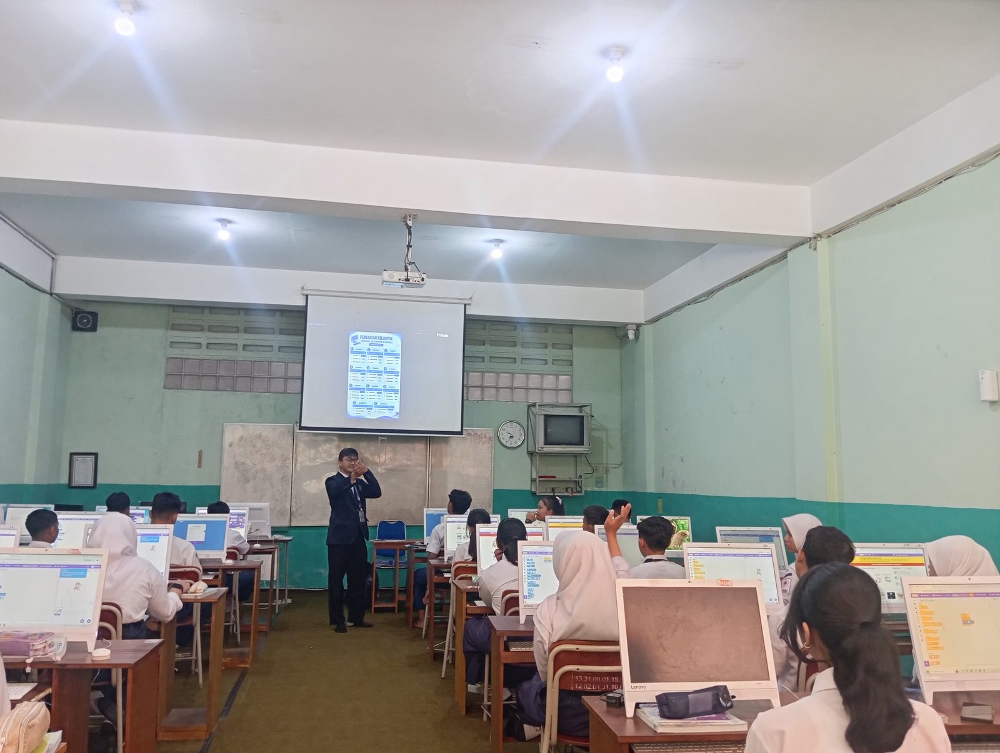
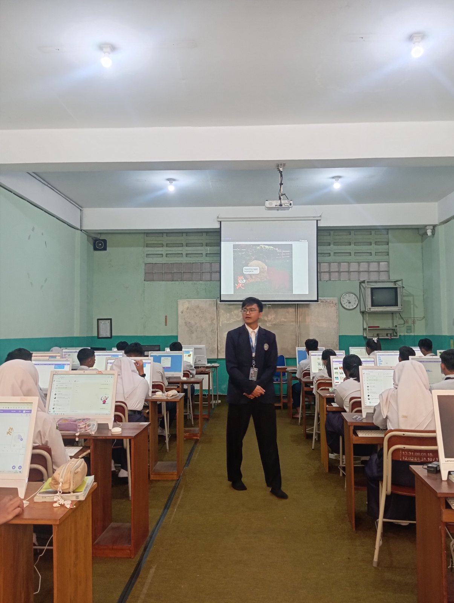
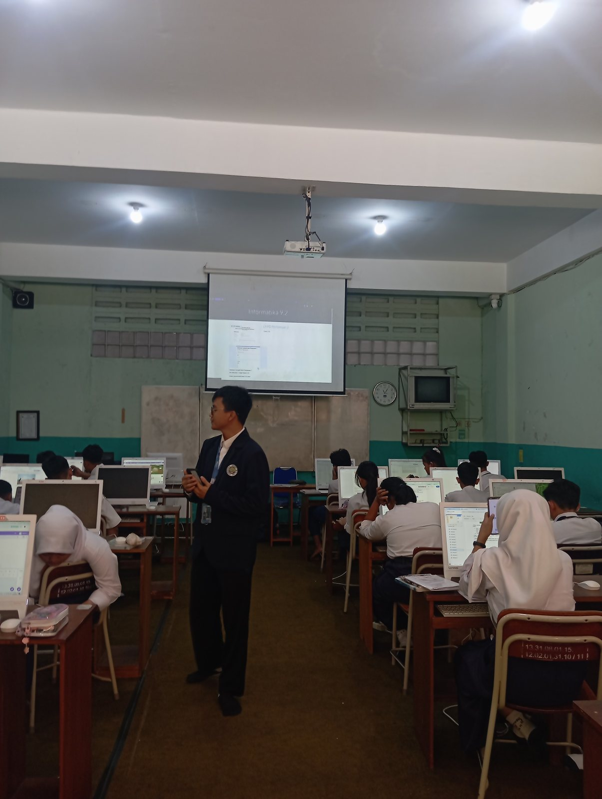
Kompilasi praktik terbimbing P1–P2, 28 Juli dan 4 Agustus 2026.
Urutan bergerak dari pemahaman koordinat dan logika gerak menuju pengenalan masalah pemrograman, pendampingan melalui contoh, serta pemeriksaan pemahaman peserta didik.
Guru membimbing peserta didik menghubungkan nilai koordinat X dan Y dengan arah serta posisi sprite. Penjelasan menekankan bahwa perubahan tanda nilai mengubah arah pergerakan.
Peserta didik diarahkan untuk membandingkan logika menjalankan gerakan terlebih dahulu dengan menunggu terlebih dahulu. Fokusnya adalah memahami dampak urutan blok terhadap perilaku sprite.
Pembelajaran diawali dengan penguatan K3 sebagai bagian dari kesiapan dan tanggung jawab selama menggunakan fasilitas laboratorium komputer.
Guru mengulas kembali koordinat untuk mengaktifkan pengetahuan yang telah dipelajari sebelum masuk ke konsep berikutnya.
Setelah pengondisian kelas, guru mengarahkan perhatian pada persoalan yang akan diselesaikan melalui konsep perulangan dan percabangan.
Contoh respons “Hai” dan “Halo” digunakan untuk membantu peserta didik memahami bahwa keluaran program dapat bergantung pada kondisi tertentu.
Guru mengarahkan peserta didik menerapkan penjelasan melalui kegiatan pada LKPD, sehingga konsep tidak berhenti pada demonstrasi.
Seorang peserta didik menjelaskan kembali pemahamannya tentang percabangan. Momen ini memperlihatkan pemeriksaan pemahaman selama proses belajar.
Guru membandingkan blok repeat dengan forever untuk memperjelas perbedaan perulangan yang memiliki jumlah pengulangan tertentu dan perulangan yang terus berjalan.
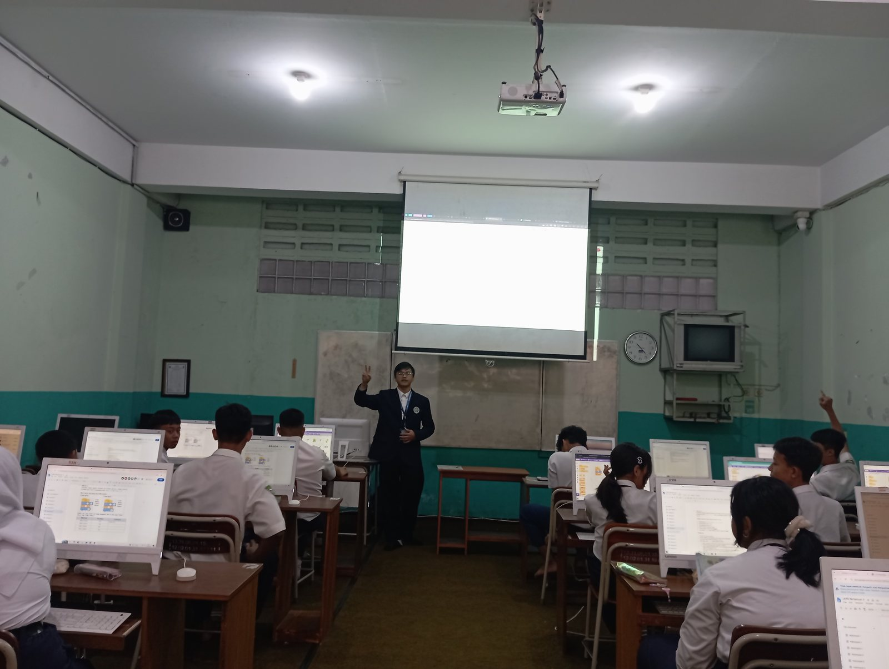
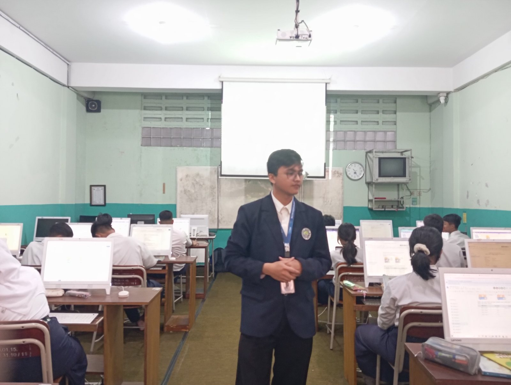
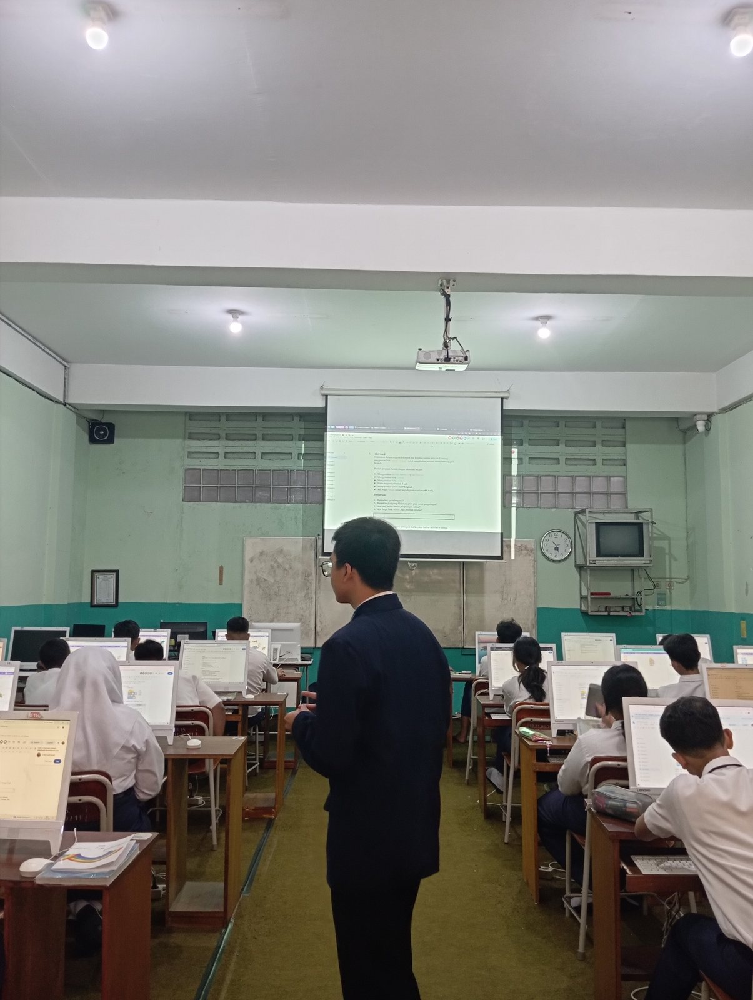
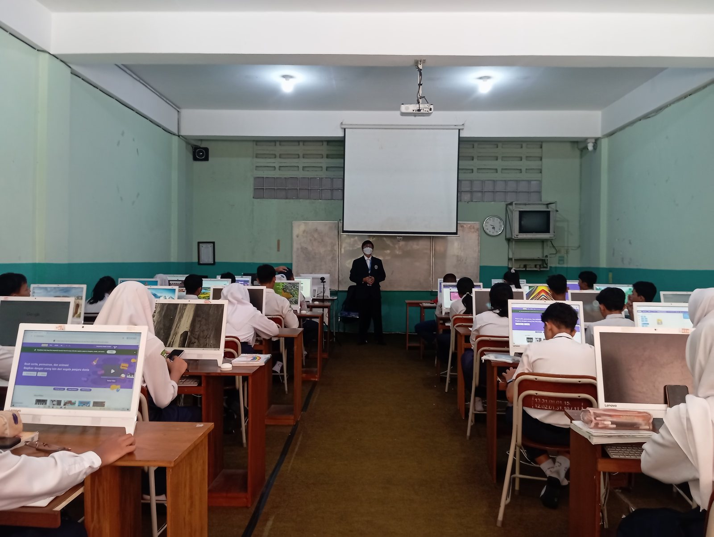
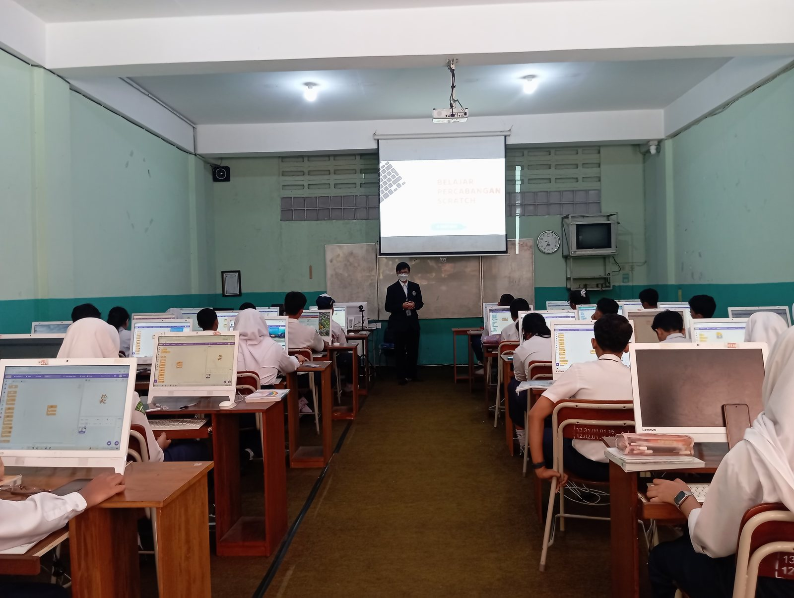
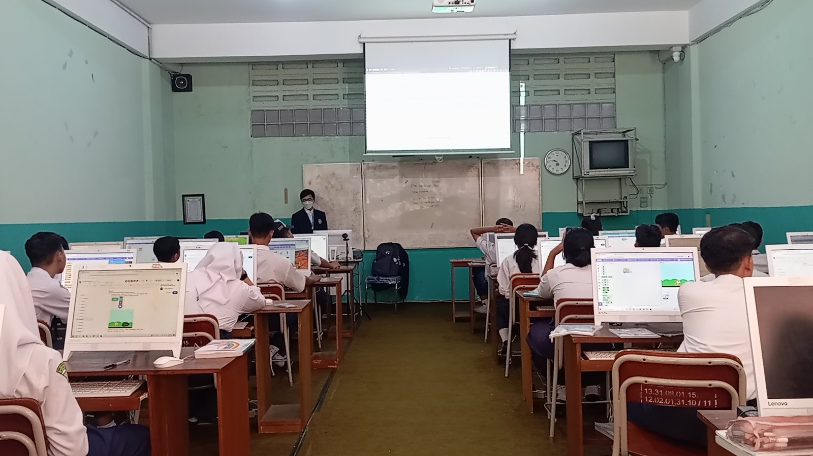
Kompilasi menampilkan praktik pada P3 dan P4. Materi pengantar proyek individual P5 didukung oleh modul ajar, LKPD, dan instrumen penilaian.
Refleksi Siklus 1 menunjukkan bahwa pembelajaran praktik menuntut keseimbangan antara kebebasan bereksplorasi dan pengelolaan kelas yang konsisten.
Demonstrasi dan praktik langsung membantu peserta didik memahami hubungan instruksi dengan perilaku objek. Pengenalan proyek individual membuka ruang bagi penerapan konsep sesuai minat.
Perbedaan kemampuan awal, kendala akun/perangkat, serta variasi kecepatan kerja memerlukan pengawasan dan alokasi waktu yang lebih terencana.
Persiapan teknis perlu dilakukan sebelum kelas. Instruksi praktik disusun bertahap, dukungan tambahan disiapkan bagi peserta didik yang membutuhkan, dan tantangan pengayaan diberikan kepada peserta didik yang lebih siap.
Pembelajaran profesional. Pengalaman ini memperkuat pemahaman bahwa guru Informatika perlu merancang pengalaman belajar yang konkret sekaligus mengelola ritme kelas. Keberhasilan praktik tidak hanya bergantung pada ketepatan materi, tetapi juga pada kesiapan sarana, pemerataan kesempatan mencoba, dan kualitas pendampingan.